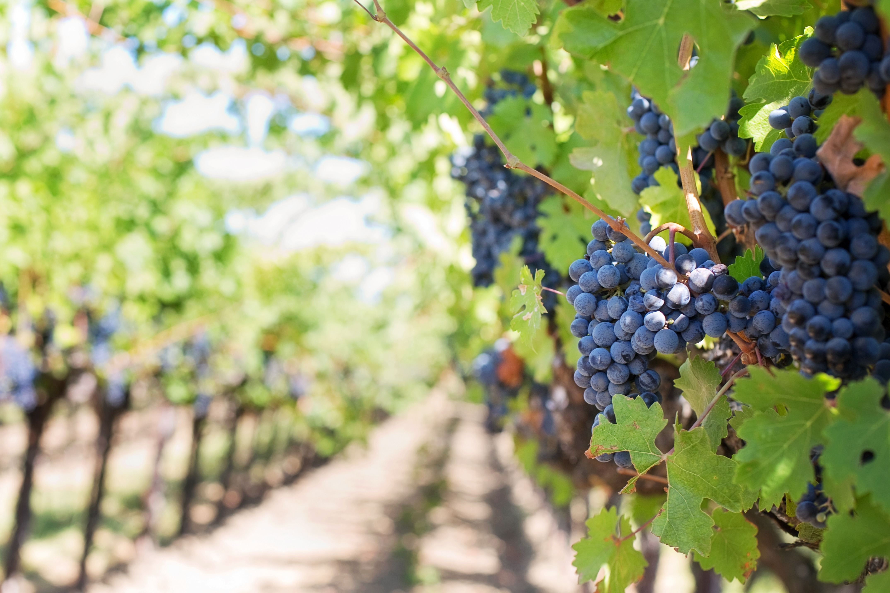
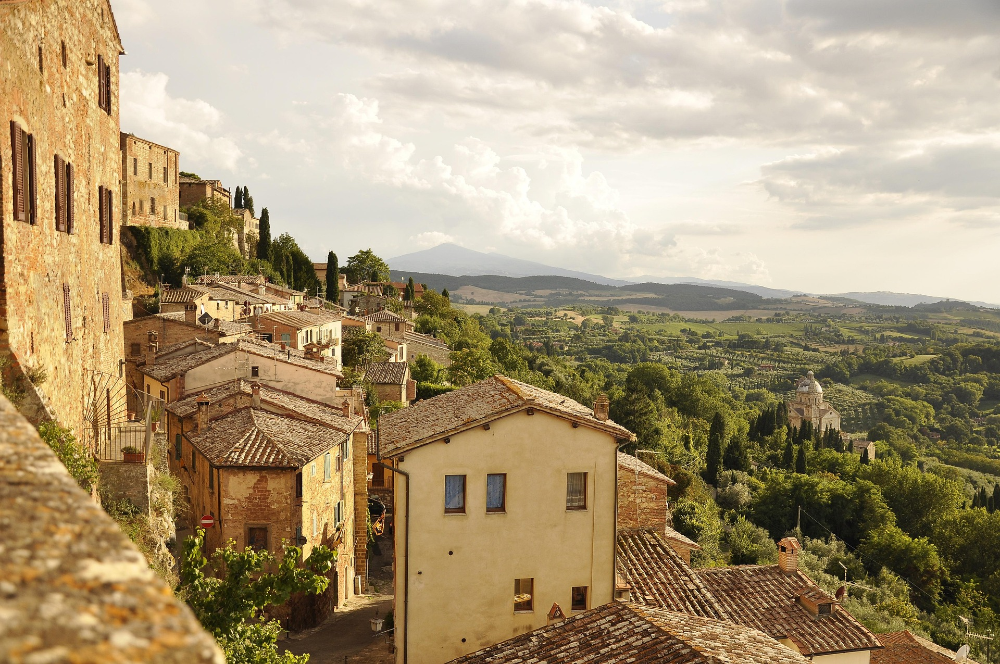

Italia también tiene paisajes que parecen sacados de una postal. Hay costas con agua azul, colinas llenas de viñedos y caminos perfectos para caminar sin prisa. Es el lugar ideal para respirar aire fresco, ver atardeceres increíbles y desconectarse un poco del ruido del día a día.


